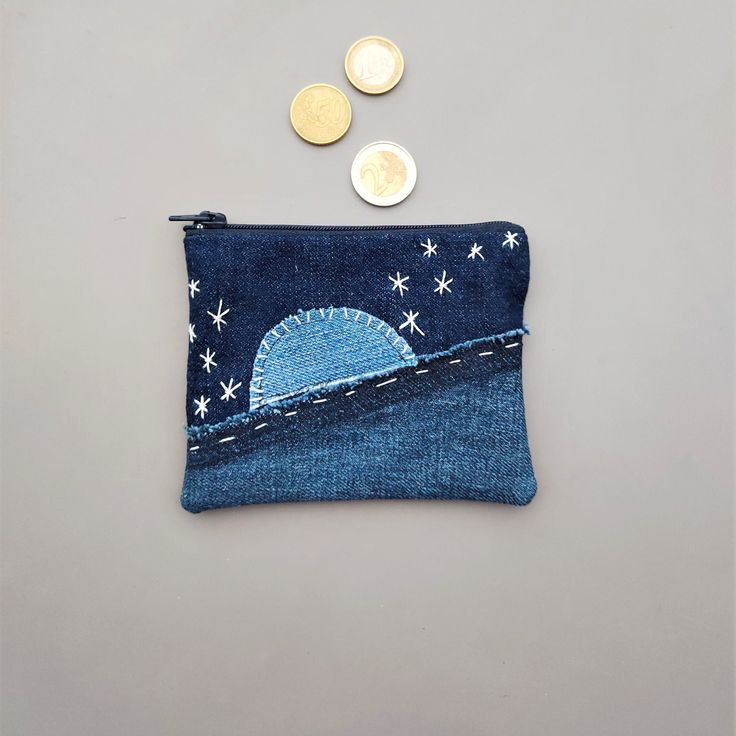

Pot Tanaman dari Botol Plastik
Ubah botol plastik menjadi pot tanaman kreatif dan ramah lingkungan.
Lihat Tutorial

Hiasan Dinding dari Koran Bekas
Gunakan koran bekas untuk membuat dekorasi dinding unik dan menarik.
Lihat Tutorial

Tempat Lilin dari Toples
Sulap toples bekas menjadi tempat lilin cantik untuk dekorasi rumah.
Lihat Tutorial
Celengan dari Kardus
Buat celengan kreatif menggunakan kardus bekas.
Lihat Tutorial
Gantungan dari Tutup Botol
Transformasi tutup botol menjadi gantungan cantik.
Lihat Tutorial
Bunga dari Kertas Bekas
Buat bunga dekoratif dari kertas bekas yang tidak terpakai.
Lihat Tutorial
Bingkai Foto dari Stik Es Krim
Sulap stik es krim bekas menjadi bingkai foto kreatif.
Lihat Tutorial

Dompet dari Jeans Lama
Buat dompet kecil dari jeans bekas.
Lihat Tutorial
Vas dari Botol Kaca Bekas
Transformasi botol kaca menjadi vas bunga cantik.
Lihat Tutorial